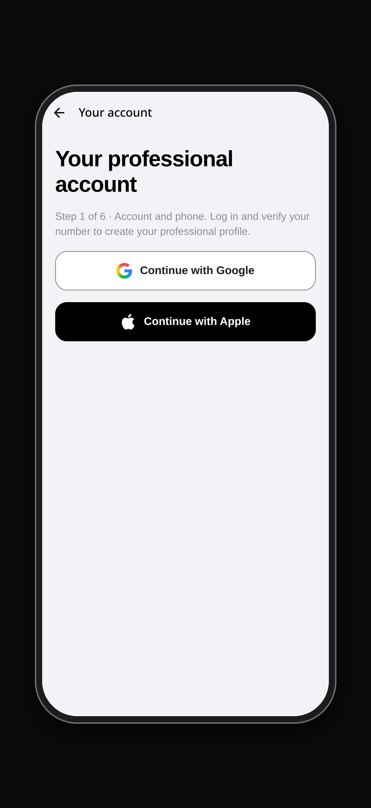

Open the app
Choose the professional path
Open barberlinknv.com and select Get started. On the next screen, choose Offer my services.
Guest booking is for clients. To offer your own services, you need a professional account.

For barbers · Getting started
Create your account, tell clients what you offer and set the hours that work for you. Here is how to get started with BarberLink.
Start in BarberLinkOpen professional sign-up
Open barberlinknv.com and select Get started. On the next screen, choose Offer my services.
Guest booking is for clients. To offer your own services, you need a professional account.
On Your professional account, choose Continue with Google or Continue with Apple.
When asked, enter your phone number with its country code, request the SMS code and enter it in the app. Continue once your phone is verified.
Already have a BarberLink account? Sign in with that same account.

Example app screens. The layout may vary by platform and app version.
Complete your registration
Use Continue to move through the form. Review your information before activating your profile.
Confirm that you are signed in and your phone number is verified.
Add your professional name, a short introduction and a profile photo. Tell clients about your specialties.
Choose your work setup, add the workplace name and address, and confirm the location so clients can find you.
Add at least one active service. Each service needs a name, price and duration in minutes.
Select your working days and set your opening and closing times. Check that they match when you can accept appointments.
Review your booking settings and the professional responsibility declaration. When everything is correct, select Activate my profile.
Open BarberLink and choose “Offer my services” to begin.
Create your professional profile Back to plans and pricing